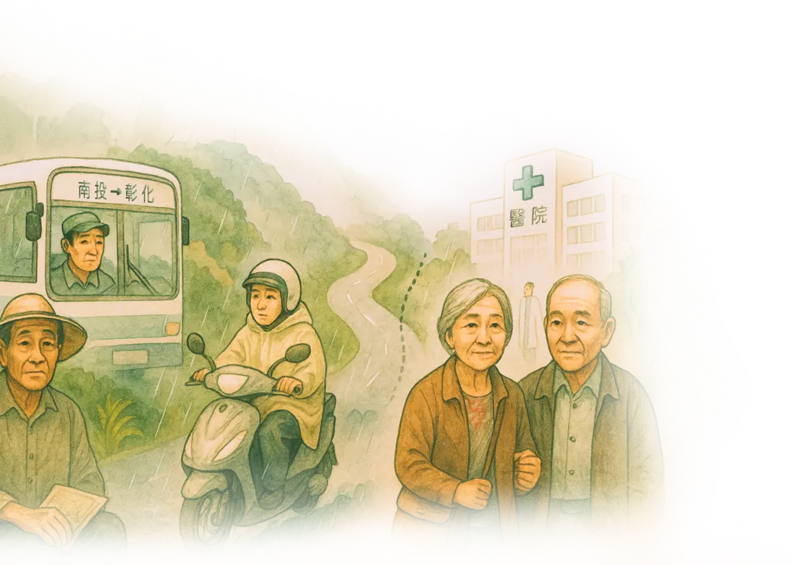

健康台灣深耕計畫 · 彰基教學部
建構彰投醫教卓越共榮新典範
整合雲端平台與標竿制度，推動醫學教育轉型，打造資源平權的區域共學網絡。
醫學教育合作數位學習平台、圖書館文獻傳遞、癌症多專科討論平台，合作醫院同仁隨時可用。
EPA 實作輔導、臨床能力評核委員會（CCC）觀摩、導師研習營與計畫主持人工作坊，把制度帶進合作醫院。
跨院工作坊、教學模組交付、VR 教學師資培育，與部立南投醫院、南投基督教醫院、埔里基督教醫院共學共好。
報名表單由 Google 表單／Microsoft Forms 收件；標示「洽合作醫院窗口」者，請向貴院窗口報名（各指標業務窗口）。
彰化市旭光路 235 號 教學研究大樓 5 樓（教學部）聯絡分機 4368